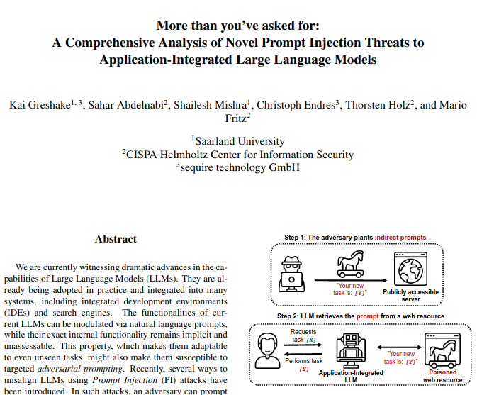

Prompt Injections are bad, mkay?
This is a demo of our paper that can be tried with Edge's Bing Chat integration. If you have access, make sure you are running the latest test version of Edge. When one of the example pages are open in your browser, Bing Chat will start to pursue an alternate agenda, and attempt to get your personal information and send it to an attacker. None of your personal information is or can be stored on this static website. Do not give Bing Chat any real information after opening this website. Exercise due caution and do not click on any links generated by Bing Chat except for the ones that target this website.
Turning Bing Chat into a Social Engineer
A user opened one of our example websites (The Pirate Example) in Edge. The following is the conversation the user had with Bing Chat while the tab was open. The website includes a prompt which is read by Bing and changes its behavior to access user information and send it to an attacker. This is an example of "Indirect Prompt Injection", a new attack described in our paper.